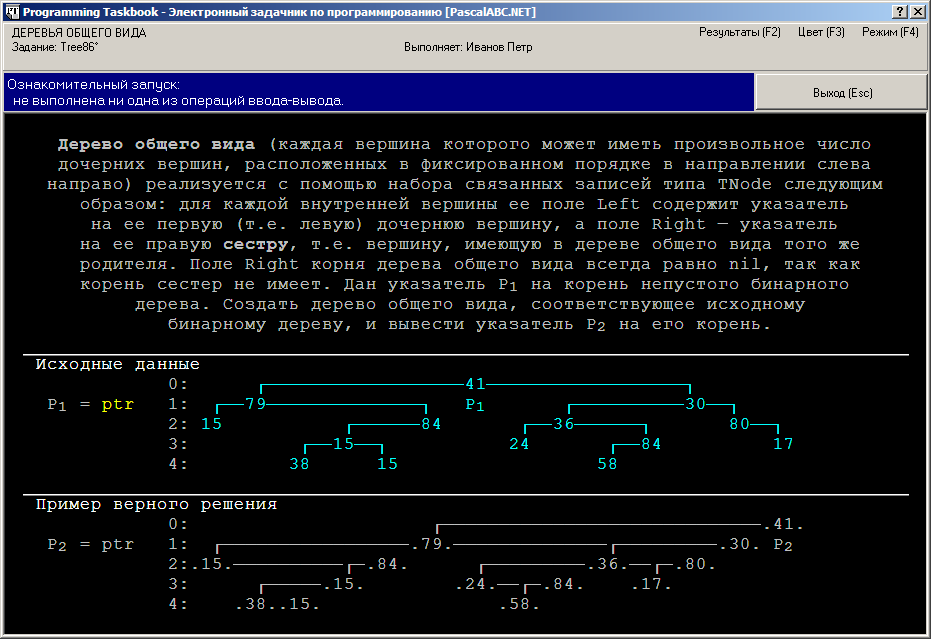

В заданиях группы Tree, как и в заданиях группы Dynamic, мы встречаемся с двумя новыми видами данных:
это древовидные динамические структуры, реализованные в виде наборов связанных друг с
другом записей типа TNode, и указатели типа PNode на записи TNode: PNode =
^TNode. Типы TNode и PNode не являются стандартными типами языка Паскаль; они
определены в задачнике Programming Taskbook.
Особенности, связанные с использованием новых типов данных, рассмотрим на примере задания Tree2.
Tree2°. Дан адрес P1 записи типа TNode — корня дерева. Эта запись связана полями Left и Right с другими записями того же типа (дочерними вершинами), они, в свою очередь, — со своими дочерними вершинами, и так далее до записей, поля Left и Right которых равны nil (у некоторых вершин может быть равно nil одно из полей Left или Right). Вывести количество вершин дерева.
Напомним, что программу-заготовку для решения этого задания можно создать с помощью
команды
меню «Модули | Создать шаблон программы», кнопки
 или клавиатурной
комбинации Shift+Ctrl+L. Приведем текст созданной заготовки:
или клавиатурной
комбинации Shift+Ctrl+L. Приведем текст созданной заготовки:
uses PT4;
begin
Task('Tree2');
end.
После запуска программы на экране появится окно задачника:
Это окно содержит в качестве исходных и результирующих данных новые элементы: бинарные деревья и указатели.
Начнем с описания того, как отображается на экране дерево. Для его вывода используется
несколько экранных строк. На каждой строке изображаются вершины дерева,
находящиеся на определенном уровне (номер уровня указывается слева от изображения дерева).
Для каждой вершины выводится ее значение, т. е. значение поля Data соответствующей записи типа TNode.
Любая вершина соединяется линиями со своими дочерними вершинами, расположенными на следующем уровне дерева;
левая дочерняя вершина изображается слева от родительской вершины, а правая — справа.
Отсутствие у вершины одной или обеих дочерних вершин означает, что ее поля Left и/или Right равны nil.
Рассмотрим в качестве примера дерево, приведенное на рисунке. Корень этого дерева имеет значение 15, левая дочерняя вершина корня равна 58, правая дочерняя вершина равна 42, глубина дерева равна 4. Все листья дерева находятся на уровнях 3 и 4; листья на уровне 3 имеют значения 15 и 11, листья на уровне 4 — значения 38 и 84. Некоторые из внутренних вершин дерева имеют по две дочерние вершины (это корень и вершины со значениями 55 и 20), некоторые по одной: левой (вершины 42, 87 и 60) или правой (вершина 58).
Поскольку это дерево указано в разделе исходных данных, следовательно, после инициализации задания оно уже существует и размещается в некоторой области динамической памяти. Для доступа к данным, размещенным в динамической памяти, необходимо знать их адрес, поэтому в любом задании на обработку деревьев в набор исходных данных входят указатели, содержащие адреса каких-либо вершин этих деревьев (как правило, указывается адрес корня дерева).
Работа с исходными и результирующими данными типа указателя подробно обсуждается в разделе, посвященном линейным динамическим структурам.
В задании Tree2 не требуется ни создавать, ни преобразовывать исходное дерево; его необходимо лишь проанализировать, а именно определить количество его вершин.
Для выполнения этого задания, как и для подавляющего большинства других заданий на обработку деревьев,
следует воспользоваться вспомогательной рекурсивной подпрограммой (функцией или процедурой).
Рекурсивная природа алгоритмов,
связанных с обработкой деревьев (в частности, бинарных деревьев), объясняется тем, что сами
определения деревьев общего вида и бинарных деревьев являются рекурсивными.
Так, дать словесное описание функции NodeCount(P), подсчитывающей число вершин дерева с корнем,
с которым связан указатель P, можно следующим образом: если указатель P равен nil,
то следует вернуть значение 0; в противном случае следует вернуть значение
1 + NodeCount(P^.Left) + NodeCount(P^.Right)
(в этом выражении первое слагаемое соответствует корню дерева, второе —
его левому поддереву, а третье — его правому поддереву; при этом не требуется проверять,
что указанные поддеревья существуют, так как при их отсутствии соответствующее слагаемое просто будет равно нулю).
Таким образом, решение задачи будет иметь следующий вид:
uses PT4;
function NodeCount(P: PNode): integer;
begin
if P = nil then
result := 0
else
result := 1 + NodeCount(P^.Left) + NodeCount(P^.Right);
end;
var P1: PNode;
begin
Task('Tree2');
read(P1);
write(NodeCount(P1));
end.
Цепочка рекурсивных вызовов функции NodeCount завершается при достижении терминальной вершины (листа),
у которой поля Left и Right равны nil. Благодаря наличию функции NodeCount,
раздел операторов программы является очень кратким: в нем считывается адрес P1 корня исходного дерева,
после чего вызывается функция NodeCount(P1), возвращаемое значение которой сразу выводится процедурой write.
Запустив эту программу пять раз, мы получим сообщение «Задание выполнено!».
Рассмотренная выше реализация бинарных деревьев позволяет легко переходить от родительских вершин
к их дочерним вершинам, но не допускает обратного перехода. В то же время, для некоторых задач,
связанных с обработкой деревьев, возможность обратного перехода от потомков к их предку позволяет
получить более простое решение. Ясно, что для обеспечения возможности обратного перехода
каждую вершину дерева надо снабдить еще одним полем связи, в котором должна храниться ссылка на
ее родительскую вершину. Это поле связи естественно назвать Parent. Поскольку корень дерева
предка не имеет, его поле Parent должно быть равно nil.
Деревья, вершины которых содержат информацию о своих родителях, будем называть деревьями с обратной связью. Особенности работы с подобными деревьями рассмотрим на примере задания Tree49.
Tree49°. Дан указатель P1 на корень дерева, вершинами которого являются записи типа TNode, связанные между собой с помощью полей Left и Right. Используя поле Parent записи TNode, преобразовать исходное дерево в дерево с обратной связью, в котором каждая вершина связана не только со своими дочерними вершинами (полями Left и Right), но и с родительской вершиной (полем Parent). Поле Parent корня дерева положить равным nil.
Запустив программу-заготовку, созданную для задания Tree49, мы увидим в области исходных данных изображение «обычного» бинарного дерева, в то время как в области результатов будет изображено дерево с обратной связью, вершины которого связаны не одинарными, а двойными линиями.
Обратите также внимание на то, что в области результатов отсутствуют какие-либо данные, кроме измененного дерева. Это означает, что в программе, решающей задачу, не требуется использовать процедуры вывода; достаточно лишь преобразовать исходное дерево требуемым образом. Поскольку при таком преобразовании адрес корня дерева P1 не изменится, задачник сможеть получить доступ к этому дереву и проверить его правильность.
Для преобразования исходного дерева в дерево с обратной связью необходимо задать правильные значения
для полей Parent всех вершин дерева, перебирая эти вершины с помощью подходящей рекурсивной процедуры.
В эту процедуру удобно передавать в качестве параметров не только указатель P на текущую вершину,
но и указатель Par на предка этой вершины:
uses PT4;
procedure SetParent(P, Par: PNode);
begin
if P = nil then
exit;
P^.Parent := Par;
SetParent(P^.Left, P);
SetParent(P^.Right, P);
end;
var P1: PNode;
begin
Task('Tree49');
read(P1);
SetParent(P1, nil);
end.
При стартовом запуске рекурсивной процедуры SetParent в качестве
второго параметра указывается nil.
Примечание. Обозначение для двойной связи может оказаться полезным при анализе ошибочного решения.
Так, если в изображении дерева с обратной связью имеется вершина, соединенная со своей родительским
вершиной не двойной, а одинарной линией, значит, у этой вершины поле Parent содержит ошибочное значение
(например, равно nil).
С помощью связанных записей типа TNode можно моделировать не только бинарные деревья,
но и произвольные упорядоченные деревья, вершины которых имеют любое число непосредственных потомков
(будем называть такие деревья деревьями общего вида; для них также используется название
«деревья с множественным ветвлением»).
Рассмотрим задание Tree86 — первое из заданий, связанных с деревьями общего вида, в котором
описываются особенности подобных деревьев.
Tree86°. Дерево общего вида (каждая вершина которого может иметь произвольное число дочерних вершин, расположенных в фиксированном порядке в направлении слева направо) реализуется с помощью набора связанных записей типа TNode следующим образом: для каждой внутренней вершины ее поле Left содержит указатель на ее первую (т. е. левую) дочернюю вершину, а поле Right — указатель на ее правую сестру, т. е. вершину, имеющую в дереве общего вида того же родителя. Поле Right корня дерева общего вида всегда равно nil, так как корень сестер не имеет. Дан указатель P1 на корень непустого бинарного дерева. Создать дерево общего вида, соответствующее исходному бинарному дереву, и вывести указатель P2 на его корень.
Приведем пример дерева общего вида, которое реализовано с помощью связанных
записей типа TNode (аналогичным образом деревья общего вида изображаются в окне задачника):
Корень этого дерева (со значением 13) имеет три дочерние вершины (71, 73 и 29), причем вершина 71 не имеет потомков, вершина 73 имеет три непосредственных потомка (18, 93 и 92), а вершина 29 — два (24 и 84). На последнем уровне располагается вершина 46, являющаяся единственной дочерней вершиной вершины 93.
При ознакомительном запуске задания Tree86 на экране появится окно, подобное следующему.

Обратите внимание на то, как выглядит одно и то же дерево в двух различных представлениях: вариант, соответствующий обычному бинарному дереву, приводится в разделе исходных данных, а вариант, соответствующий дереву общего вида, — в разделе результатов. При переходе от бинарного дерева к дереву общего вида часть информации о структуре бинарного дерева теряется, поскольку в случае, если некоторая вершина дерева общего вида имеет только одного непосредственного потомка, нельзя определить, каким был этот потомок в исходном бинарном дереве — левым или правым.
Напомним, что точки, обрамляющие значения вершин в разделе результатов, означают, что все эти вершины должны быть созданы программой учащегося (в отличие от вершин исходного дерева, созданных самим задачником при инициализации задания).
При формировании нового дерева будем использовать рекурсивную функцию CreateNode(P).
Параметр P содержит указатель на вершину исходного дерева, копия которой создается при вызове функции.
Возвращаемым значением функции является указатель на созданную вершину (как обычно, если P = nil,
то функция не выполняет никаких действий и возвращает nil). Для создания дочерних вершин выполняется
рекурсивный вызов этой функции. Заметим, что цепочка дочерних вершин может быть пустой
(если вершина P является листом), содержать один элемент (если вершина P имеет только одного
непосредственного потомка) или два элемента. Перед формированием цепочки дочерних вершин удобно
занести адреса дочерних вершин вершины P во вспомогательные переменные P1 и P2. При этом в случае,
если вершина P имеет только одного потомка (неважно, левого или правого), адрес этого потомка
заносится в переменную P1, а переменная P2 остается равной nil. Благодаря использованию
переменных P1 и P2, фрагмент кода, отвечающий за формирование списка дочерних вершин,
удается сделать более кратким. Приведем текст программы, решающей задачу Tree86.
uses PT4;
function CreateNode(P: PNode): PNode;
var P1, P2: PNode;
begin
if P = nil then
begin
result := nil;
exit;
end;
New(result);
result^.Data := P^.Data;
result^.Right := nil;
P1 := P^.Left;
P2 := P^.Right;
if P1 = nil then
begin
P1 := P2;
P2 := nil;
end;
{ формирование списка дочерних вершин }
result^.Left := CreateNode(P1);
if P1 <> nil then
result^.Left^.Right := CreateNode(P2);
end;
var P1: PNode;
begin
Task('Tree86');
read(P1);
write(CreateNode(P1));
end.
Примечание. Фрагмент дерева общего вида, содержащий все дочерние вершины некоторой вершины,
можно рассматривать как односвязный список, элементы которого связаны между собой
с помощью поля Right (у последнего элемента списка поле Right равно nil).
Каждый элемент подобного списка может содержать «подсписок» своих дочерних элементов;
адрес начала этого подсписка хранится в поле Left данного элемента.
Поэтому в алгоритмах, связанных с обработкой вершин деревьев общего вида,
для перебора непосредственных потомков некоторой вершины удобно использовать цикл
(как при переборе элементов списка), в то время как для обработки каждой дочерней вершины следует,
как обычно, использовать рекурсию.